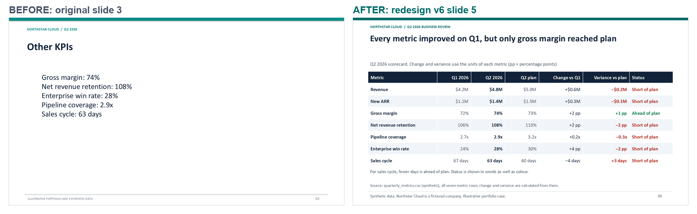
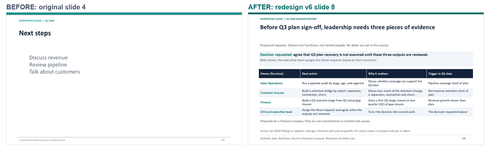

Assertion headlines
Every title states a conclusion the evidence supports, not a topic. "Revenue numbers" becomes "Revenue grew $0.6M but finished $0.2M (−4.0%) below plan".
Portfolio proof of concept · Python · PowerPoint · Financial analysis · Automated QA
Two public case studies show how an executive deck is checked against its sources, rebuilt as editable PowerPoint, and redesigned for a decision, with every result measured, dated, and stated with its limits.
Previous version of this site (as published before 17 October 2026)
Executive presentations are often read once, quickly, and acted on. This project is an AI-assisted, Python-supported workflow for making such a deck both correct and decision-ready. It covers:
The human project lead established the objectives, selected the direction and the cases, defined the requirements and acceptance criteria, and evaluated the decisions, including what may be published.
Claude, an AI assistant by Anthropic, assisted with implementation: writing code and tests, running the automated validation, carrying out internal inspections, and drafting analyses and documents under the project lead's direction.
A third case study is kept private; it can be shown on request.
Review status. All checks so far are automated tests or internal inspections, including reviews by AI models. No independent human reviewer has checked the work yet.
The project was developed inside a structured internal research and development framework. It kept every stage in a fixed order, gave each stage written inputs, outputs, and checks, and recorded every decision, so that each result can be traced back to its source.
What the deck must answer, for whom, and what is out of scope.
Every source file recorded with its origin, date, and checksum before analysis.
Figures recomputed independently; facts, calculations, interpretations, and recommendations kept apart.
Thresholds set before the work they judge, and not changed afterwards.
Python builds the decks from declared specifications and one calculation engine.
Automated checks, internal inspection, and (pending) independent review, each reported separately.
Each design or method decision recorded with its reason and the alternative rejected.
Released only after their checks pass, with known limits stated.
This is a working method, not a certification. No formal compliance with an external standard is claimed.
DRAFT / NOT CERTIFIED A house standard proposed for this project. No deck is claimed to conform to it, and no score has been awarded against it.
The project lead adopted a draft Sales Presentation Engineering Standard as the project's working gold standard for presentations. The Case 01 and Case 02 redesigns were rebuilt to it. It is written for business-to-business sales decks; here the "buyer" is read as the decision-maker who acts on the deck.
Every title states a conclusion the evidence supports, not a topic. "Revenue numbers" becomes "Revenue grew $0.6M but finished $0.2M (−4.0%) below plan".
The first slide gives the answer and the decision requested. The closing slides give the options, the decision, and a next action for each owner.
Every figure on a slide is a row in a claims register: the source cell or calculation, the unit, the period, and the delivery mode. A figure typed by hand fails the check.
Two files from one storyboard. The presenter deck keeps slides short and puts the talk track in the speaker notes. The standalone leave-behind adds a reading guide, full caveats, and a glossary. Titles, figures, and slide order are the same.
A narrative step that has no evidence is omitted, never filled with invented content. The data-notes slide lists each omitted step and the reason.
Seven stage gates and ten tests. Each result is reported as an automated check, an internal review, or NOT TESTED. A test that needs people stays open until people do it.
| Gate | What it asks | Status |
|---|---|---|
| G0 | Audience, decision, and next action defined | Defined in the project's application specification, approved by the project lead |
| G1 | Evidence accepted | PASS automated: 96 of 96 figures traced in each mode |
| G2 | Narrative approved | HUMAN REVIEW REQUIRED AI-model reviews only so far |
| G3 | Editable, renderable PowerPoint in both modes | PASS automated checks; renders inspected internally |
| G4 | Numerical accuracy and accessibility | Numbers and programmatic accessibility checks automated. Accessibility Checker and screen reader NOT TESTED |
| G5 | Independent comprehension test | NOT TESTED |
| G6 | Outcome tracking plan | Plan only: the deck is not used in a real meeting |
Every redesigned slide has a record in a reasoning log that states what changed, what was deliberately kept, and why. Unchanged elements are recorded as carefully as changes, so a reviewer can see what was judged correct. Example, Case 01 version 6, revenue slide:
This is a working method, not a certification. The standard draws on published practice, but no compliance with any external standard is claimed. Reviewer scores are NOT ASSESSED.
Fictional company, synthetic data. Northstar Cloud does not exist. All data was created for this portfolio.
A four-slide quarterly business review: a generic agenda, revenue figures with no comparison, five KPIs with no plan or period, and next steps with no owners. A leadership team could not decide anything from it. The slide review recorded 15 defects across the four slides, from missing comparisons to text below accessible contrast.
The original PowerPoint file and one data file: seven metrics (revenue, New ARR, gross margin, net revenue retention, pipeline coverage, enterprise win rate, sales cycle), each for Q1 2026, Q2 2026, and the Q2 plan.
The data passed 12 of 14 data-quality checks; 2 cannot be tested with the data supplied (no segment data). Every metric is computed once, in one calculation engine. All 96 figures and chart points on each version 6 deck are produced by that engine and traced to a source cell or a documented calculation: 96 of 96 in the presenter deck and 96 of 96 in the leave-behind.
The original deck was first rebuilt faithfully from a declared specification and compared with the original: 596 properties, 0 material differences, 0.0000 % changed pixels on all four slides. Only then was it redesigned.
Automated deck checks: presenter deck 100 pass, 0 fail; leave-behind 110 pass, 0 fail.
Each image shows the original slide on the left and the version 6 presenter slide on the right. Select an image to open it at full size.
 Opens the full-size image.
Opens the full-size image.
 Opens the full-size image.
Opens the full-size image.

Opens the full-size image.
Opens the full-size image.Version 5, an 8-slide deck with 98 of 98 figures traced, is kept for before-and-after comparison: PowerPoint and PDF.
Limits. Synthetic data cannot be verified against business records. The PowerPoint Accessibility Checker, a screen-reader test, an independent comprehension test, and independent review have not been done.
Independent work. This case study was developed independently from Microsoft's public investor-relations files. It was not commissioned, reviewed, sponsored, or endorsed by Microsoft. "Microsoft" is a trademark of Microsoft Corporation.
A synthetic case cannot show whether the method holds up on a real, professionally produced deck. A public earnings release has an authoritative source for every number, so each figure can be checked.
Microsoft's FY2026 Q4 earnings release, published 29 July 2026: microsoft.com investor relations, FY2026 Q4. Six files from that page (earnings slides, financial statements workbook, press release, call transcript, outlook slides, Form 10-K) were retrieved on 13 October 2026 and recorded with their SHA-256 checksums.
The statements were tied first (15 of 15 hold, for example revenue minus cost of revenue equals gross margin, and segments sum to the total). Then all 85 values shown on the slides were compared with the official statements after rounding to the precision shown: 85 of 85 match. One is consistent only within rounding: a 70 % growth figure computed from inputs disclosed to USD 0.1 billion. In all, 67 metrics were recalculated independently, with stated formulas and half-up rounding.
The original deck is image-only: every slide is one picture. Seven of its 23 slides were rendered to images, and the original files were locked by an operating-system access rule. A separate AI agent instance with no access to the originals rebuilt the seven slides from the images alone as native text boxes, tables, and a chart (19 min 40 s by its own time stamps). An audit afterwards checked the boundary: 7 of 7 checks passed. Limits: the folder owner could have changed the access rule, and network access was forbidden by instruction rather than blocked.
Layout position (median offset 0.06 % to 0.17 % of the slide), type size (median height ratio 0.984 to 1.023), editability (0 pictures), and text, measured two separate ways. Later correction rounds, which were not blind, fixed eight measured defects such as underline width, type size, line wraps, and a shadow under rules.
The first executive version (nine slides) was built from registered figures only: all 117 figures trace to an official cell or formula, each statement is tagged as fact, analysis, or question, and automated deck checks pass. The review of the original found no figure needing correction; the redesign answers access and communication issues and keeps what works.
Version 2 rebuilds the executive version to the working standard (section C) in two delivery modes: a 10-slide presenter deck and an 11-slide standalone leave-behind with a reading guide first. A new decision slide asks the reader to agree which of three open questions to take to management; it gives no investment advice. The data-notes slide lists the omitted steps (market insight, future state as a scope choice, business case) and the reasons. The version 2 decks are not published because they present Microsoft material.
| Check | Result | Kind of evidence |
|---|---|---|
| Figures of the first version traced in version 2 | PASS 117 of 117, plus 1 declared addition in the opening title | Automated |
| Automated deck checks, presenter deck (10 slides) | PASS 110 pass, 0 fail | Automated |
| Automated deck checks, leave-behind (11 slides) | PASS 120 pass, 0 fail | Automated |
| Design checks of the standard, both decks | PASS 0 fail; 1 warning per deck kept (the heuristic headline check found no verb in the summary title) | Automated |
| Reconstruction text against the internally checked reference transcription | PASS 7 of 7 slides, F1 1.000 | Automated comparison; reference corrections inspected internally |
| OCR text-agreement test, threshold 0.98 | FAIL 3 of 7 slides, kept as recorded; not rerun for version 2. Detailed explanation | Automated; result retained |
What is published is the method, the results, and the independently calculated metrics.
Done: internal checks only
Not done
The table below gives the results recorded on 14 October 2026 in the private working repository. The automation, the tests, and some source files are private, so they cannot be rerun from the public repository.
| Check | Result | Kind of evidence |
|---|---|---|
| Full private pipeline | PASS 16 of 16 steps | Automated |
| Unit tests | PASS 82 of 82 in that run; more than 200 passed on 17 October 2026 | Automated |
| Microsoft slide values against the official financial statements | PASS 85 of 85 | Automated |
| Reconstruction text against an internally checked reference transcription | PASS 7 of 7 slides | Automated comparison; reference corrections inspected internally |
| OCR text-agreement test, threshold 0.98 | FAIL 3 of 7 slides (F1 0.978, 0.969, 0.976). Detailed explanation | Automated; result retained |
| Independent review | NOT TESTED | — |
| Hands-on accessibility testing | NOT TESTED | — |
The original Microsoft slides contain no live text, so their words were read by optical character recognition (OCR). The OCR-based text-agreement test did not reach its 0.98 threshold on three of the seven reconstructed slides (F1 0.978, 0.969, and 0.976). The threshold was not lowered.
A self-check shows a limit of the measurement tool. When the same OCR read the reconstructed slides, whose text is known exactly, it scored only F1 0.957 to 0.974 on five slides. On those slides the OCR cannot decide the 0.98 threshold.
A supplementary check compared the reconstruction's own text with a reference transcription of the original slide images. The reference is the original OCR text with 43 documented corrections, each inspected internally on an image of the original slide.
Supplementary result: all seven slides matched this internally checked reference (F1 1.000, no unexplained differences). Separately, the 85 financial values shown on the original slides agree with Microsoft's official financial statements, one of them within the rounding displayed, and all 85 corresponding values are present in the reconstruction.
The OCR failures remain documented; the supplementary check does not resolve or replace them. Independent verification of the reference transcription: NOT TESTED
Text size, contrast, slide titles, the start of the reading order, descriptions on charts and tables, and the document title and language were checked by script on both executive decks and pass. These checks do not replace the PowerPoint Accessibility Checker or a screen-reader test, which have not been run.
OCR read "45%" as "450/0", a tilde as "N", and could not read white labels on dark bars. Every flagged token was cropped from both slide images and compared: none was a real text error. Measuring the OCR on known text showed its own error rate, which separated instrument error from reconstruction error.
Pixel and line-width measurements found defects that text checks miss: table rules drawn at half width because the cell below suppressed the shared border, type set about 4 % too large and squeezed to compensate, and a soft shadow under every rule. Each was fixed at its source and re-measured.
The Microsoft original is pictures only. The reconstruction has 0 pictures: native text boxes, 4 tables, and 1 chart, so the text can be searched, edited, and read by a screen reader.
Before any slide was judged, the statements were tied (15 of 15) and every slide value was compared with them under the rounding shown (85 of 85). A value that matches only within rounding is reported as such, not as an exact match.
Each result is labelled automated, internal inspection, or independent review. A failed automated test is not turned into a pass by an internal check, and internal inspection is never presented as independent acceptance.
The standard's recommended story has steps such as market insight and a business case. The Northstar data holds no market, cost, or benefit data, so those steps were left out and listed with their reasons, not filled with plausible numbers.
The public files are built from an approved list and checked for restricted files, private references, credentials, and any 8-word passage shared with the Microsoft slide text. One check caught a private file name in a generated page before publication; it was removed.
The work was directed by the human project lead and implemented with Claude, an AI assistant by Anthropic. No license is granted for this repository: all rights are reserved. Microsoft's financial figures are facts taken from its public disclosures and are credited to it; no Microsoft slides, images, or files are reproduced here.